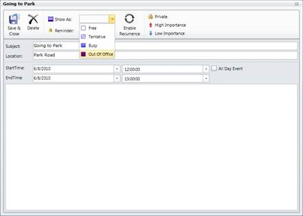
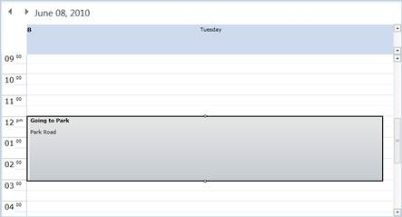
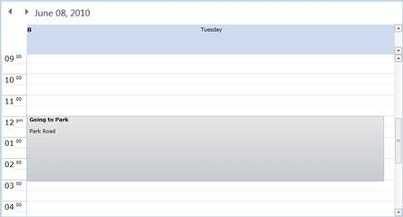
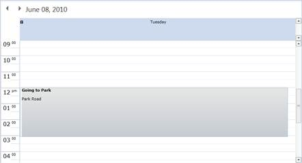
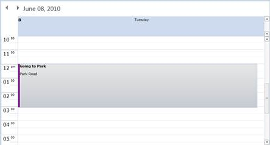

Essential Schedule for Silverlight provides the priority options for the appointment. The appointments are differentiated based on this Priority Property.
You can set the priority for the appointment by using the Priority Property. The values for the Priority Property are as follows:
· Free
· Busy
· Tentative and
· Out-of-Office
Note: The default value is Busy
You can set the appointment priority in the appointment window also. In the appointment window, the Show As combo box contains the priority values.
The following code illustrates this:
|
[XAML] <schedule:Schedule.Appointments> <schedule:ScheduleAppointment StartTime="6/22/2010 09:00:00 AM" EndTime="6/22/2010 011:00:00 AM" Subject="Restart my Home Server" Location="Watling Street" Priority="Busy" /> </schedule:Schedule.Appointments> |
|
[C#] ScheduleAppointment appointment = new ScheduleAppointment (); Appointment.Priority = AppointmentPriority.Busy; |
Change the priority using the Appointment window. The following figure shows this:

Figure 8: Priority changed via Appointment Window
The following screenshots show the differentiation of the priority appointments.

Figure 9: Free Appointment

Figure 10: Busy Appointment

Figure 11: Tentative Appointment

Figure 12: Out of Office Appointment